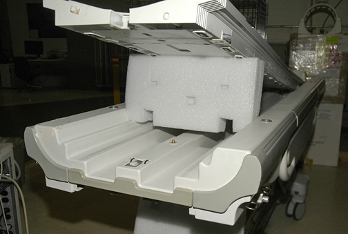

Operating Documentation
Direction 5500113, Rev# 3
Module Version 5.0, Version Date 7/15/10
Operating Documentation |
Undock the Patient Table and move it out of magnet room.
Remove Upper Bellows and Left Lower Base Side cover. For more information, refer to the Patient Table Upper Bellows and Lower Base Side Cover Removal procedure.
Lower the Table Lock Safety Bar. Lower the Table and verify that all weight is resting on the lock bar.
Manually slide the cradle forward and prop up. For more information, refer to the Removing Cradle Assembly procedure.
Illustration 2: Propping Up the Cradle

Using an 5/64 Allen wrench, loosen set screw at Down Link Clevis.
Remove Patient Table Bottom Cover Front.
| ||||
| Potential body injury and damage to a critical component of the patient table. | ||||
| Falling of unsecured object | ||||
| When removing plate that secures the cradle latch housing, make sure to hold the plate in place as the screws are removed. Failure to do so will result in the housing falling once no longer secured to the patient table. |
Remove four bolts securing cradle latch housing and cradle latch cover.
Unfasten cable end from Down Link Clevis (see Illustration 3).
Pull cable out of Cradle Latch Block on front of Patient Table.
If the Cradle Latch is being replaced, remove the limit screw at the back of the Cradle Latch Housing. Extract plastic latching mechanism and replace.
Insert new cable through head of Cradle Latch Block so once fully threaded, the swaged end fits into hole in latch pin.
Reinstall the Cradle Latch Housing.
Adjust the housing's position so as to minimize the distance between the latch and the latch housing. Cycle the latch several times, to ensure that the latch never sticks in the “down” position.
Route cable through cable casing and insert through cable Down Link Clevis (see Illustration 3).
Loop cable twice through hole in Down Link Clevis.
Tighten set screw (see Illustration 3).
Return to magnet room and dock the Patient Table.
| NOTE: | Wrap the cable around Down Link Clevis twice. |
Adjust cable so that when docked, main latch will be flush with casting. For more information, refer to the Cradle Release Block Adjustment procedure. Secure adjustment by tightening set screw after adjustment is complete (see Illustration 8).
Loop the excess cable multiple times to bundle itself. See Illustration 9.
Replace cradle along with Upper Bellows and Lower Base Side Cover.
Re-dock Patient Table.